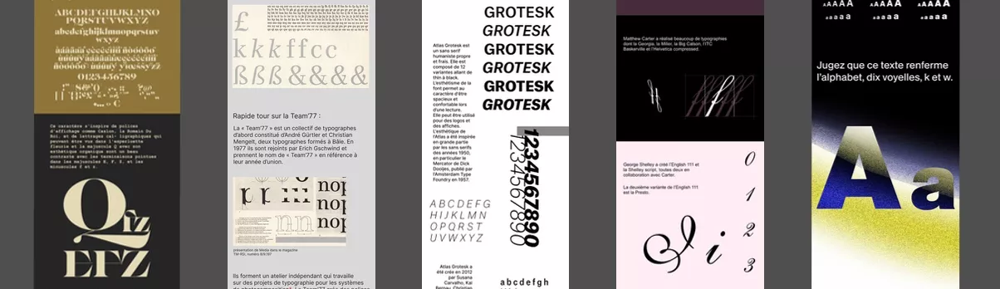

Durant l’année 2022-23, dans l’objectif de faire connaître la nouvelle typothèque de l’Eracom, deux classes ID réalisent une newsletter hebdomadaire qui fait découvrir chaque semaine une fonte typographique, à travers un visuel original et informatif.
